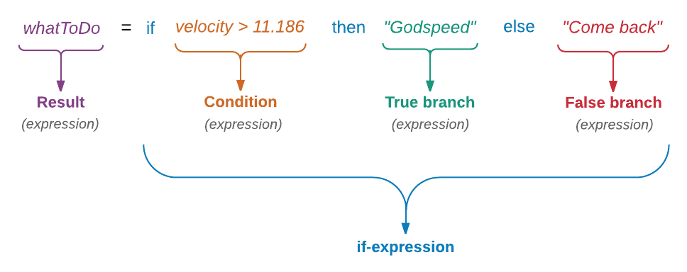

Řekněme, že se vydáváme na vzušující expedici, která má objasnit, zda je možný život na Enceladusu, jednom z měsíců Saturnu. Nejdříve musíme překonat gravitační vliv Země. Pokud náš koráb umí cestovat rychlostí větší než 11.186 km/s, můžeme naši meziplanetární pouť započít. Vyjádřeme si to v Elmu.
> velocity = 11.2
11.2
> if velocity > 11.186 then "Godspeed" else "Come back"
"Godspeed"Nejobvyklejší způsob vyjádření logické podmínky v Elmu je pomocí výrazu if. Ten má tři části:
- podmínku
- výraz, který se vyhodnotí, je-li podmínka splněna (if ... = true)
- výraz, který se vyhodnotí, není-li podmínka splněna (if ... = false)
Na rozdíl od ostatních jazyků, musí Elm uvést větev "else". Jinak vrací chybové hlášení.
> if velocity > 11.186 then "Godspeed"
------------------- SYNTAX PROBLEM -----------------------
I need whitespace, but got stuck on what looks like a new
declaration. You are either missing some stuff in the
declaration above or just need to add some spaces here:
4| someFunction x = x + 1
^
I am looking for one of the following things:
whitespaceThe error message above isn’t that helpful. Sometimes Elm can’t explain things in a way we humans can understand. But it’s getting better with each release. So you might see a different (perhaps a better) message with the next major release of Elm.
Jako všechny ostatní výrazy, vrací také výraz if hodnotu. Podchyťme vratnou hodnotu výše uvedeného výrazu konstantou.
> whatToDo = if velocity > 11.186 then "Godspeed" else "Come back"
"Godspeed"
> whatToDo
"Godspeed"
Někteří lidé nemusí toužit po cestě do neznámých koutů kosmu. Přitom také nechtějí žít na zemi. Určitou jejich možností je žít na kosmické stanici, obíhající kolem Země obvodovou rychlostí 7.67 km/s. Přidejme tuto opci do našeho kódu.
> velocity = 11
11
> speed = 7.67
7.67
> if velocity > 11.186 then "Godspeed" else if speed == 7.67 then "Stay in orbit" else "Come back"
"Stay in orbit"Síto podmínek lze rozšířit (větvit) dalšími podmínkami else if víceméně v neomezeném počtu. Pro lepší přehlednost lze jednořádkový výraz rozdělit do více řádek přidáním \ na konec řádku:
> if velocity > 11.186 then \
| "Godspeed" \
| else if speed == 7.67 then \
| "Stay in orbit" \
| else \
| "Come back"
"Stay in orbit"Jak již bylo zmíněno v kapitole 1, elm-repl automaticky přidává pojítko |s na začátek každého řádku, počínaje druhým. Nezapomeňte odsadit "Godspeed", "Stay in orbit" a "Come back" alespoň o jednu mezeru. Nedostatek indentace považuje Elm v některých případech za syntaktickou chybu. Tyto případy podrobně probereme v sekci Indentace. Řádky jsme rovněž kvůli lepší čitelnosti ukončovali zpětným lomítkem \ ale to není nutné při zápisu kódu do souboru, o čemž pohovoříme v další sekci.
I s touto možností je psaní delšího kódu v replu poměrně nemotorné. Brzy přejdeme ke psaní kódu do souboru.
Česká verze anglických slov velocity a speed je v obou případech rychlost. Přičemž "speed" je skalární veličina a "velocity" je vektor, což je v našem případě nepodstatné. Podle použitých hodnot lze usuzovat, že termínem "speed" se míní 1. kosmická rychlost (7,911 km/s), termínem "velocity" se míní 2. kosmická rychlost (11,186 km/s).